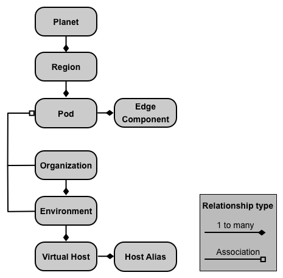
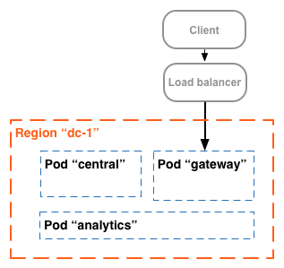
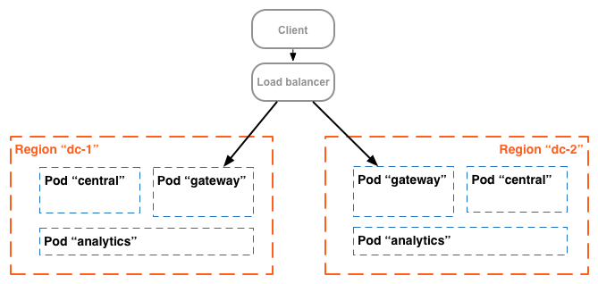
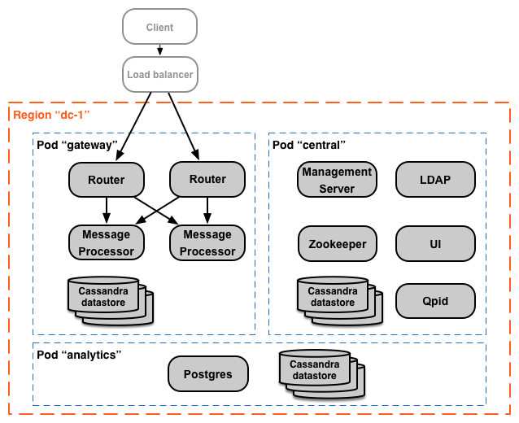
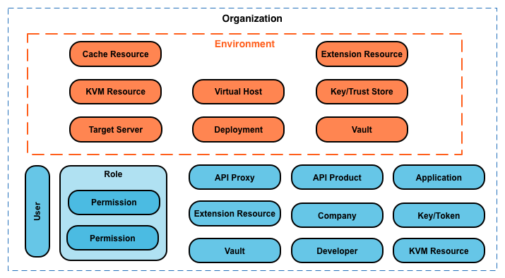

Edge for Private Cloud v. 4.17.09
An on-premises installation of Edge Private Cloud, or an Edge instance, consists of multiple Edge components installed on a set of server nodes. The following image shows the relationship among the planet, regions, pods, organizations, environments, and virtual hosts that make up an Edge instance:

The following table describes these relationships:
|
Contains |
Associated with |
Default |
|
|---|---|---|---|
|
Planet |
One or more regions |
n/a |
|
|
Region |
One or more pods |
"dc-1" |
|
|
Pod |
One or more Edge components |
"central" |
|
|
Organization |
One or more environments |
One or more pods containing Message Processors, and a user acting as the org admin |
none |
|
Environment |
One or more virtual hosts |
One or more Message Processors in a pod associated with the parent organization |
none |
|
Virtual Host |
One or more host aliases |
none |
A planet represents an entire Edge hardware and software environment and can contain one or more regions. In Edge, a planet is a logical grouping of regions — you do not explicitly create or configure a planet as part of installing Edge.
A region is a grouping of one or more pods. By default, when you install Edge, the installer creates a single region named "dc-1" containing three pods, as the following table shows:
|
Region |
Pods in the region |
|---|---|
|
"dc-1" |
"gateway", "central", "analytics" |
The following image shows the default regions:

This image shows the load balancer directing traffic to the "gateway" pod. The "gateway" pod contains the Edge Router and Message Processor components that handle API requests. Unless you define multiple data centers, you should not have to create additional regions.
In a more complex installation, you can create two or more regions. One reason to create multiple regions is to organize machines geographically, which minimizes network transit time. In this scenario, you host API endpoints so that they are geographically “close” to the consumers of those APIs.
In Edge, each region is referred to as a data center. A data center in the Eastern US can then handle requests arriving from Boston, Massachusetts, while a data center in Singapore can handle requests originating from devices or computers in Asia.
For example, the following image shows two regions, corresponding to two data centers:

A pod is a grouping of one or more Edge components and Cassandra datastores. The Edge components can be installed on the same node, but are more commonly installed on different nodes. A Cassandra datastore is a data repository used by the Edge components in the pod.
By default, when you install Edge, the installer creates three pods and associates the following Edge components and Cassandra datastores with each pod:
|
Pod |
Edge components |
Cassandra datastores |
|
|---|---|---|---|
|
"gateway" |
Router, Message Processor |
cache-datastore |
keyvaluemap-datastore |
|
"central" |
Management Server, Zookeeper, LDAP, UI, Qpid |
application-datastore
apimodel-datastore
audit-datastore
auth-datastore
|
identityzone-datastore
edgenotification-datastore
management-server
scheduler-datastore
user-settings-datastore
|
|
"analytics" |
Postgres |
analytics-datastore |
reportcrud-datastore |
The Edge components and Cassandra datastores in the "gateway" pod are required for API processing. These components and datastores must be up and running to process API requests. The components and datastores in the "central" and "analytics" pods are not required to process APIs, but add additional functionality to Edge.
The following image shows the components in each pod:

You can add additional Message Processor and Router pods to the three that are created by default. Alternatively, you can add additional Edge components to an existing pod. For example, you can add additional Routers and Message Processors to the "gateway" pod to handle increased traffic loads.
Notice that the "gateway" pod contains the Edge Router and Message Processor components. Routers only send requests to Message Processors in the same pod and not to Message Processors in other pods.
You can use the following API call to view server registration details at the end of the installation for each pod. This is a useful monitoring tool.
curl -u adminEmail:pword http://<ms_IP>:8080/v1/servers?pod=podName
where ms_IP is the IP address or DNS name of the Management Server, and podName is either:
For example, for the "gateway" pod:
> curl -u adminEmail:pword http://<ms_IP>:8080/v1/servers?pod=gateway
You see output in the form:
[ {
"externalHostName" : "localhost",
"externalIP" : "192.168.1.11",
"internalHostName" : "localhost",
"internalIP" : "192.168.1.11",
"isUp" : true,
"pod" : "gateway",
"reachable" : true,
"region" : "dc-1",
"tags" : {
"property" : [ {
"name" : "jmx.rmi.port",
"value" : "1101"
}, ... ]
},
"type" : [ "message-processor" ],
"uUID" : "276bc250-7dd0-46a5-a583-fd11eba786f8"
},
{
"internalIP" : "192.168.1.11",
"isUp" : true,
"pod" : "gateway",
"reachable" : true,
"region" : "dc-1",
"tags" : {
"property" : [ ]
},
"type" : [ "dc-datastore", "management-server", "cache-datastore", "keyvaluemap-datastore", "counter-datastore", "kms-datastore" ],
"uUID" : "13cee956-d3a7-4577-8f0f-1694564179e4"
},
{
"externalHostName" : "localhost",
"externalIP" : "192.168.1.11",
"internalHostName" : "localhost",
"internalIP" : "192.168.1.11",
"isUp" : true,
"pod" : "gateway",
"reachable" : true,
"region" : "dc-1",
"tags" : {
"property" : [ {
"name" : "jmx.rmi.port",
"value" : "1100"
}, ... ]
},
"type" : [ "router" ],
"uUID" : "de8a0200-e405-43a3-a5f9-eabafdd990e2"
} ]
The type attribute lists the component type. Note that it lists the Cassandra datastores registered in the pod. While Cassandra nodes are installed in the "gateway" pod, you will see Cassandra datastores registered with all pods.
An organization is a container for all the objects in an Apigee account, including APIs, API products, apps, and developers. An organization is associated with one or more pods, where each pod must contain one or more Message Processors.
In the default installation, where you only have a single "gateway" pod that contains all the Message Processors, you only associate an org with the "gateway" pod. Unless you define multiple data centers, and multiple Message Processors pods, you cannot associate an organization with multiple pods.
In an on-premises installation of Edge Private Cloud, there are no organizations by default. When you create an organization, you specify two pieces of information:
An organization can contain one or more environments. The default Edge installation procedure prompts you to create two environments: "test" and "prod". However, you can create more environments as necessary, such as "staging", "experiments", etc.
Organization provides scope for some Apigee capabilities. For example, key-value-map (KVM) data is available at the organization level, meaning from all environments. Other capabilities, such as caching, are scoped to a specific environment. Apigee analytics data is partitioned by a combination of organization and environment.
Shown below are the major objects of an organization, including those defined globally in the organization, and those defined specifically to an environment:

An environment is a runtime execution context for the API proxies in an organization. You must deploy an API proxy to an environment before it can be accessed. You can deploy an API proxy to a single environment or to multiple environments.
An organization can contain multiple environments. For example, you might define a "dev", "test", and "prod" environment in an organization.
When you create an environment, you associate it with one or more Message Processors. You can think of an environment as a named set of Message Processors on which API proxies run. Every environment can be associated with the same Message Processors, or with different ones.
To create an environment, specify two pieces of information:
A Message Processor can be associated with multiple environments. For example, your Edge installation contains two Message Processors: A and B. You then create three environments in your organization: "dev", "test", and "prod":
The Message Processors assigned to an environment can all be from the same pod, or can be from multiple pods, spanning multiple regions and data centers. For example, you define the environment "global" in your organization that includes Message Processors from three regions, meaning three different data centers: US, Japan, and Germany.
Deploying an API proxy to the "global" environment causes the API proxy to run on Message Processors in all of three data centers. API traffic arriving at a Router in any one of those data centers would be directed only to Message Processors in that data center because Routers only direct traffic to Message Processors in the same pod.
A virtual host defines the port on the Edge Router on which an API proxy is exposed, and, by extension, the URL that apps use to access the API proxy. Every environment must define at least one virtual host.
Ensure that the port number specified by the virtual host is open on the Router node. You can then access an API proxy by making a request to:
http://<routerIP>:<port>/{proxy-base-path}/{resource-name}
https://<routerIP>:<port>/{proxy-base-path}/{resource-name}
where:
Typically, you do not publish your APIs to customers with an IP address and port number. Instead, you define a DNS entry for the Router and port. For example:
http://myAPI.myCo.com/{proxy-base-path}/{resource-name}
https://myAPI.myCo.com/{proxy-base-path}/{resource-name}
You also must create a host alias for the virtual host that matches the domain name of the DNS entry. From the example above, you would specify a host alias of myAPI.myCo.com. If you do not have a DNS entry, set the host alias to the IP address of the Router and port of the virtual host, as <routerIP>:port.
For more, see http://apigee.com/docs/api-services/content/virtual-hosts.
After you complete the Edge installation process, your first action is typically to create an organization, environment, and virtual host through the "onboarding" process. To perform onboarding, run the following command on the Edge Management Server node:
/opt/apigee/apigee-service/bin/apigee-service apigee-provision setup-org -f configFile
This command takes as input a config file that defines a user, organization, environment, and virtual host.
For example, you create:
After running that script, you can access your APIs by using a URL in the form:
http://<router-ip>:9001/{proxy-base-path}/{resource-name}
You can later add any number of organizations, environments, and virtual hosts.
For more information on onboarding, see http://docs.apigee.com/node/19911.